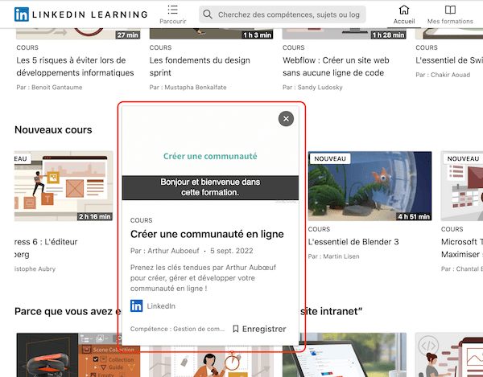
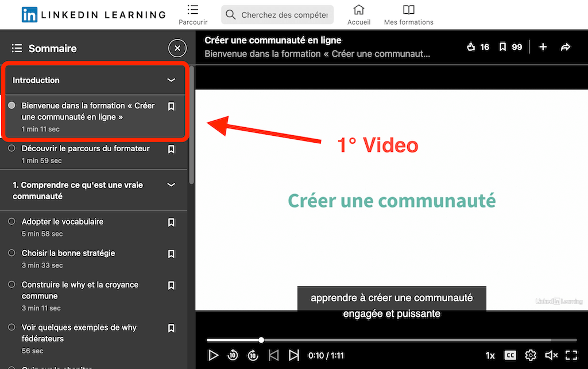

Hello !
Like me, you enjoy LinkedIn trainings
but you would like to be capable to watch the episodes without network or electricity ?
Then you've come to the right place.
Just open the video intro and then click once on the LinkedIn "Video Downloader" button.
The plugin will search and download all the videos of each lessons and take it on a folder, in your computer.
Do not touch this browser window again during the operation.
open the first training video:
you will find all the videos in the "Linkedin Learning" folder in your Download folder.